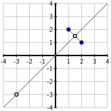
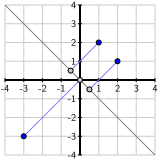

With our understanding of symmetric matrices and variance in hand, we’ll now explore how to determine the directions in which the variance of a dataset is as large as possible and where it is as small as possible. This is part of a much larger story involving a type of function, called a quadratic form, that we’ll introduce here.
Preview Activity7.2.1.
Let’s begin by looking at an example. Suppose we have three data points that form the demeaned data matrix
Plot the demeaned data points in Figure 7.2.1. In which direction does the variance appear to be largest and in which does it appear to be smallest?
Figure7.2.1.Use this coordinate grid to plot the demeaned data points.
Construct the covariance matrix \(C\) and determine the variance in the direction of \(\twovec11\) and the variance in the direction of \(\twovec{-1}1\text{.}\)
What is the total variance of this dataset?
Generally speaking, if \(C\) is the covariance matrix of a dataset and \(\uvec\) is an eigenvector of \(C\) having unit length and with associated eigenvalue \(\lambda\text{,}\) what is \(V_{\uvec}\text{?}\)
Subsection7.2.1Quadratic forms
Given a matrix \(A\) of \(N\) demeaned data points, the symmetric covariance matrix \(C=\frac1N AA^T\) determines the variance in a particular direction
Notice that this expression is similar to the one we use to find the variance \(V_{\uvec}\) in terms of the covariance matrix \(C\text{.}\) The only difference is that we allow \(\xvec\) to be any vector rather than requiring it to be a unit vector.
Example7.2.2.
Suppose that \(A=\begin{bmatrix}
1 \amp 2\\
2 \amp 1
\end{bmatrix}
\text{.}\) If we write \(\xvec=\twovec{x_1}{x_2}\text{,}\) then we have
Notice that the value of the quadratic form is a scalar.
Definition7.2.3.
If \(A\) is a symmetric \(m\times m\) matrix, the quadratic form defined by \(A\) is the function \(q_A(\xvec) = \xvec\cdot(A\xvec)\text{.}\)
Activity7.2.2.
Let’s look at some more examples of quadratic forms.
Consider the symmetric matrix \(D = \begin{bmatrix}
3 \amp 0 \\
0 \amp -1 \\
\end{bmatrix}
\text{.}\) Write the quadratic form \(q_D(\xvec)\) defined by \(D\) in terms of the components of \(\xvec=\twovec{x_1}{x_2}\text{.}\) What is the value of \(q_D\left(\twovec2{-4}\right)\text{?}\)
Given the symmetric matrix \(A=\begin{bmatrix}
2 \amp 5 \\
5 \amp -3
\end{bmatrix}
\text{,}\) write the quadratic form \(q_A(\xvec)\) defined by \(A\) and evaluate \(q_A\left(\twovec{2}{-1}\right)\text{.}\)
Suppose that \(q\left(\twovec{x_1}{x_2}\right) = 3x_1^2
- 4x_1x_2 + 4x_2^2\text{.}\) Find a symmetric matrix \(A\) such that \(q\) is the quadratic form defined by \(A\text{.}\)
Suppose that \(q\) is a quadratic form and that \(q(\xvec) = 3\text{.}\) What is \(q(2\xvec)\text{?}\)\(q(-\xvec)\text{?}\)\(q(10\xvec)\text{?}\)
Suppose that \(A\) is a symmetric matrix and \(q_A(\xvec)\) is the quadratic form defined by \(A\text{.}\) Suppose that \(\xvec\) is an eigenvector of \(A\) with associated eigenvalue -4 and with length 7. What is \(q_A(\xvec)\text{?}\)
Linear algebra is principally about things that are linear. However, quadratic forms, as the name implies, have a distinctly non-linear character. First, if \(A=\begin{bmatrix} a \amp b \\ b \amp c \end{bmatrix}\text{,}\) is a symmetric matrix, then the associated quadratic form is
Notice how the variables \(x_1\) and \(x_2\) are multiplied together, which tells us this isn’t a linear function.
This expression assumes an especially simple form when \(D\) is a diagonal matrix. In particular, if \(D = \begin{bmatrix}
a \amp 0 \\
0 \amp c \\
\end{bmatrix}
\text{,}\) then \(q_D\left(\twovec{x_1}{x_2}\right) = ax_1^2 +
cx_2^2\text{.}\) This is special because there is no cross-term involving \(x_1x_2\text{.}\)
Remember that matrix transformations have the property that \(T(s\xvec) = sT(\xvec)\text{.}\) Quadratic forms behave differently:
For instance, when we multiply \(\xvec\) by the scalar 2, then \(q_A(2\xvec) = 4q_A(\xvec)\text{.}\) Also, notice that \(q_A(-\xvec) = q_A(\xvec)\) since the scalar is squared.
Finally, evaluating a quadratic form on an eigenvector has a particularly simple form. Suppose that \(\xvec\) is an eigenvector of \(A\) with associated eigenvalue \(\lambda\text{.}\) We then have
Let’s now return to our motivating question: in which direction \(\uvec\) is the variance \(V_{\uvec}=\uvec\cdot(C\uvec)\) of a dataset as large as possible and in which is it as small as possible. Remembering that the vector \(\uvec\) is a unit vector, we can now state a more general form of this question: If \(q_A(\xvec)\) is a quadratic form, for which unit vectors \(\uvec\) is \(q_A(\uvec)=\uvec\cdot(A\uvec)\) as large as possible and for which is it as small as possible? Since a unit vector specifies a direction, we will often ask for the directions in which the quadratic form \(q(\xvec)\) is at its maximum or minimum value.
Activity7.2.3.
We can gain some intuition about this problem by graphing the quadratic form and paying particular attention to the unit vectors.
Evaluating the following cell defines the matrix \(D = \begin{bmatrix}
3 \amp 0 \\
0 \amp -1
\end{bmatrix}\) and displays the graph of the associated quadratic form \(q_D(\xvec)\text{.}\) In addition, the points corresponding to vectors \(\uvec\) with unit length are displayed as a curve. Notice that the matrix \(D\) is diagonal. In which directions does the quadratic form have its maximum and minimum values?
Write the quadratic form \(q_D\) associated to \(D\text{.}\) What is the value of \(q_D\left(\twovec10\right)\text{?}\) What is the value of \(q_D\left(\twovec01\right)\text{?}\)
Consider a unit vector \(\uvec=\twovec{u_1}{u_2}\) so that \(u_1^2+u_2^2 =
1\text{,}\) an expression we can rewrite as \(u_1^2 =
1-u_2^2\text{.}\) Write the quadratic form \(q_D(\uvec)\) and replace \(u_1^2\) by \(1-u_2^2\text{.}\) Now explain why the maximum of \(q_D(\uvec)\) is 3. In which direction does the maximum occur? Does this agree with what you observed from the graph above?
Write the quadratic form \(q_D(\uvec)\) and replace \(u_2^2\) by \(1-u_1^2\text{.}\) What is the minimum value of \(q_D(\uvec)\) and in which direction does the minimum occur?
Use the previous Sage cell to change the matrix to \(A=\begin{bmatrix}
1 \amp 2 \\
2 \amp 1
\end{bmatrix}\) and display the graph of the quadratic form \(q_A(\xvec) = \xvec\cdot(A\xvec)\text{.}\) Determine the directions in which the maximum and minimum occur?
Remember that \(A=\begin{bmatrix}
1 \amp 2 \\
2 \amp 1
\end{bmatrix}\) is symmetric so that \(A=QDQ^T\) where \(D\) is the diagonal matrix above and \(Q\) is the orthogonal matrix that rotates vectors by \(45^\circ\text{.}\) Notice that
Using the fact that \(q_A(\uvec) = q_D(\vvec)\text{,}\) explain how we now know the maximum value of \(q_A(\uvec)\) is 3 and determine the direction in which it occurs. Also, determine the minimum value of \(q_A(\uvec)\) and determine the direction in which it occurs.
This activity demonstrates how the eigenvalues of \(A\) determine the maximum and minimum values of the quadratic form \(q_A(\uvec)\) when evaluated on unit vectors and how the associated eigenvectors determine the directions in which the maximum and minimum values occur. Let’s look at another example so that this connection is clear.
Example7.2.4.
Consider the symmetric matrix \(A=\begin{bmatrix}
-7 \amp -6 \\
-6 \amp 2 \\
\end{bmatrix}\text{.}\) Because \(A\) is symmetric, we know that it can be orthogonally diagonalized. In fact, we have \(A=QDQ^T\) where
From this diagonalization, we know that \(\lambda_1=5\) is the largest eigenvalue of \(A\) with associated eigenvector \(\uvec_1 =
\twovec{1/\sqrt{5}}{-2/\sqrt{5}}\) and that \(\lambda_2 =
-10\) is the smallest eigenvalue with associated eigenvector \(\uvec_2 =
\twovec{2/\sqrt{5}}{1/\sqrt{5}}\text{.}\)
Let’s first study the quadratic form \(q_D(\uvec) = 5u_1^2
- 10u_2^2\) because the absence of the cross-term makes it comparatively simple. Remembering that \(\uvec\) is a unit vector, we have \(u_1^2+u_2^2=1\text{,}\) which means that \(u_1^2 = 1-u_2^2\text{.}\) Therefore,
This tells us that \(q_D(\uvec)\) has a maximum value of \(5\text{,}\) which occurs when \(u_2=0\) or in the direction \(\twovec10\text{.}\)
In the same way, rewriting \(u_2^2 = 1-u_1^2\) allows us to conclude that the minimum value of \(q_D(\uvec)\) is \(-10\text{,}\) which occurs in the direction \(\twovec01\text{.}\)
Let’s now return to the matrix \(A\) whose quadratic form \(q_A\) is related to \(q_D\) because \(A =
QDQ^T\text{.}\) In particular, we have
In other words, we have \(q_A(\uvec) = q_D(\vvec)\) where \(\vvec=Q^T\uvec\text{.}\) This is quite useful because it allows us to relate the values of \(q_A\) to those of \(q_D\text{,}\) which we already understand quite well.
Now it turns out that \(\vvec\) is also a unit vector because
Therefore, the maximum value of \(q_A(\uvec)\) is the same as \(q_D(\vvec)\text{,}\) which we know to be \(5\) and which occurs in the direction \(\vvec=\twovec10\text{.}\) This means that the maximum value of \(q_A(\uvec)\) is also \(5\) and that this occurs in the direction \(\uvec =
Q\vvec = Q\twovec10 = \twovec{1/\sqrt{5}}{-2/\sqrt{5}}\text{.}\) We now know that the maximum value of \(q_A(\uvec)\) is the largest eigenvalue \(\lambda_1=5\) and that this maximum value occurs in the direction of an associated eigenvector.
In the same way, we see that the minimum value of \(q_A(\uvec)\) is the smallest eigenvalue \(\lambda_2=-10\) and that this minimum occurs in the direction of \(\uvec=Q\twovec01 =
\twovec{2/\sqrt{5}}{1/\sqrt{5}}\text{,}\) an associated eigenvector.
More generally, we have
Proposition7.2.5.
Suppose that \(A\) is a symmetric matrix, that we list its eigenvalues in decreasing order \(\lambda_1 \geq \lambda_2 \ldots \geq \lambda_m\text{,}\) and that \(\uvec_1,\uvec_2,\ldots,\uvec_m\) is a basis of associated eigenvectors. The maximum value of \(q_A(\uvec)\) among all unit vectors \(\uvec\) is \(\lambda_1\text{,}\) which occurs in the direction \(\uvec_1\text{.}\) Similarly, the minimum value of \(q_A(\uvec)\) is \(\lambda_m\text{,}\) which occurs in the direction \(\uvec_m\text{.}\)
Example7.2.6.
Suppose that \(A\) is the symmetric matrix \(A=\begin{bmatrix}
0 \amp 6 \amp 3 \\
6 \amp 3 \amp 6 \\
0 \amp 6 \amp 6 \\
\end{bmatrix}\text{,}\) which may be orthogonally diagonalized as \(A=QDQ^T\) where
We see that the maximum value of \(q_A(\uvec)\) is 12, which occurs in the direction \(\threevec{1/3}{2/3}{2/3}\text{,}\) and the minimum value is -6, which occurs in the direction \(\threevec{2/3}{-2/3}{1/3}\text{.}\)
Example7.2.7.
Suppose we have the matrix of demeaned data points \(A = \begin{bmatrix}
2 \amp 1 \amp -3 \\
1 \amp 2 \amp -3 \\
\end{bmatrix}\) that we considered in Preview Activity 7.2.1. The data points are shown in Figure 7.2.8.
Constructing the covariance matrix \(C=\frac13~AA^T\) gives \(C=\begin{bmatrix}
14/3 \amp 13/3 \\
13/3 \amp 14/3 \end{bmatrix}\text{,}\) which has eigenvalues \(\lambda_1
= 9\text{,}\) with associated eigenvector \(\twovec{1/\sqrt{2}}{1/\sqrt{2}}\text{,}\) and \(\lambda_2=1/3\text{,}\) with associated eigenvector \(\twovec{-1/\sqrt{2}}{1/\sqrt{2}}\text{.}\)
Remember that the variance in a direction \(\uvec\) is \(V_{\uvec} = \uvec\cdot(C\uvec) = q_C(\uvec)\text{.}\) Therefore, the variance attains a maximum value of 9 in the direction \(\twovec{1/\sqrt{2}}{1/\sqrt{2}}\) and a minimum value of 1/3 in the direction \(\twovec{-1/\sqrt{2}}{1/\sqrt{2}}\text{.}\)Figure 7.2.9 shows the data projected onto the lines defined by these vectors.


Figure7.2.9.The demeaned data from Preview Activity 7.2.1 is shown projected onto the lines of maximal and minimal variance.
Remember that variance is additive, as stated in Proposition 7.1.16, which tells us that the total variance is \(V = 9 + 1/3 = 28/3\text{.}\)
We’ve been focused on finding the directions in which a quadratic form attains its maximum and minimum values, but there’s another important observation to make after this activity. Recall how we used the fact that a symmetric matrix is orthogonally diagonalizable: if \(A=QDQ^T\text{,}\) then \(q_A(\uvec) = q_D(\vvec)\) where \(\vvec = Q^T\uvec\text{.}\)
More generally, if we define \(\yvec = Q^T\xvec\text{,}\) we have
In other words, after a change of coordinates, the quadratic form \(q_A\) can be written without cross terms. This is known as the Principle Axes Theorem.
Theorem7.2.10.Principle Axes Theorem.
If \(A\) is a symmetric \(m\times m\) matrix with eigenvalues \(\lambda_1,\lambda_2,\ldots,\lambda_m\text{,}\) then the quadratic form \(q_A\) can be written, after an orthogonal change of coordinates \(\yvec=Q^T\xvec\text{,}\) as
While our questions about variance provide some motivation for exploring quadratic forms, these functions appear in a variety of other contexts so it’s worth spending some more time with them. For example, quadratic forms appear in multivariable calculus when describing the behavior of a function of several variables near a critical point and in physics when describing the kinetic energy of a rigid body.
The following definition will be important in this section.
Definition7.2.11.
A symmetric matrix \(A\) is called positive definite if its associated quadratic form satisfies \(q_A(\xvec) \gt 0\) for any nonzero vector \(\xvec\text{.}\) If \(q_A(\xvec) \geq 0\) for all nonzero vectors \(\xvec\text{,}\) we say that \(A\) is positive semidefinite.
Likewise, we say that \(A\) is negative definite if \(q_A(\xvec) \lt 0\) for all nonzero vectors \(\xvec\text{.}\)
Finally, \(A\) is called indefinite if \(q_A(\xvec) \gt 0\) for some \(\xvec\) and \(q_A(\xvec) \lt 0\) for others.
Activity7.2.4.
This activity explores the relationship between the eigenvalues of a symmetric matrix and its definiteness.
Consider the diagonal matrix \(D=\begin{bmatrix}
4 \amp 0 \\
0 \amp 2 \\
\end{bmatrix}\) and write its quadratic form \(q_D(\xvec)\) in terms of the components of \(\xvec=\twovec{x_1}{x_2}\text{.}\) How does this help you decide whether \(D\) is positive definite or not?
Now consider \(D=\begin{bmatrix}
4 \amp 0 \\
0 \amp 0 \\
\end{bmatrix}\) and write its quadratic form \(q_D(\xvec)\) in terms of \(x_1\) and \(x_2\text{.}\) What can you say about the definiteness of \(D\text{?}\)
If \(D\) is a diagonal matrix, what condition on the diagonal entries guarantee that \(D\) is
positive definite?
positive semidefinite?
negative definite?
negative semidefinite?
indefinite?
Suppose that \(A\) is a symmetric matrix with eigenvalues 4 and 2 so that \(A=QDQ^T\) where \(D=\begin{bmatrix}4 \amp 0 \\ 0 \amp 2
\end{bmatrix}\text{.}\) If \(\yvec = Q^T\xvec\text{,}\) then we have \(q_A(\xvec) = q_D(\yvec)\text{.}\) Explain why this tells us that \(A\) is positive definite.
Suppose that \(A\) is a symmetric matrix with eigenvalues 4 and 0. What can you say about the definiteness of \(A\) in this case?
What condition on the eigenvalues of a symmetric matrix \(A\) guarantees that \(A\) is
positive definite?
positive semidefinite?
negative definite?
negative semidefinite?
indefinite?
As seen in this activity, it is straightforward to determine the definiteness of a diagonal matrix. For instance, if \(D=\begin{bmatrix} 7 \amp 0 \\ 0 \amp 5 \end{bmatrix}\text{,}\) then
This shows that \(q_D(\xvec) \gt 0\) when either \(x_1\) or \(x_2\) is not zero so we conclude that \(D\) is positive definite. In the same way, we see that \(D\) is positive semidefinite if all the diagonal entries are nonnegative.
Understanding this behavior for diagonal matrices enables us to understand more general symmetric matrices. As we saw previously, the quadratic form for a symmetric matrix \(A=QDQ^T\) agrees with the quadratic form for the diagonal matrix \(D\) after a change of coordinates. In particular,
where \(\yvec=Q^T\xvec\text{.}\) Now the diagonal entries of \(D\) are the eigenvalues of \(A\) from which we conclude that \(q_A(\xvec) \gt 0\) if all the eigenvalues of \(A\) are positive. Likewise, \(q_A(\xvec)\geq 0\) if all the eigenvalues are nonnegative.
Proposition7.2.12.
A symmetric matrix is positive definite if all its eigenvalues are positive. It is positive semidefinite if all its eigenvalues are nonnegative.
Likewise, a symmetric matrix is indefinite if some eigenvalues are positive and some are negative.
We will now apply what we’ve learned about quadratic forms to study the nature of critical points in multivariable calculus. The rest of this section assumes that the reader is familiar with ideas from multivariable calculus and can be skipped by others.
First, suppose that \(f(x,y)\) is a differentiable function. We will use \(f_x\) and \(f_y\) to denote the partial derivatives of \(f\) with respect to \(x\) and \(y\text{.}\) Similarly, \(f_{xx}\text{,}\)\(f_{xy}\text{,}\)\(f_{yx}\) and \(f_{yy}\) denote the second partial derivatives. You may recall that the mixed partials, \(f_{xy}\) and \(f_{yx}\) are equal under a mild assumption on the function \(f\text{.}\) A typical question in calculus is to determine where this function has its maximum and minimum values.
Any local maximum or minimum of \(f\) appears at a critical point \((x_0,y_0)\) where
Let’s explore how our understanding of quadratic forms helps us determine the behavior of a function \(f\) near a critical point.
Consider the function \(f(x,y) = 2x^3 - 6xy +
3y^2\text{.}\) Find the partial derivatives \(f_{x}\) and \(f_y\) and use these expressions to determine the critical points of \(f\text{.}\)
Evaluate the second partial derivatives \(f_{xx}\text{,}\)\(f_{xy}\text{,}\) and \(f_{yy}\text{.}\)
Let’s first consider the critical point \((1,1)\text{.}\) Use the quadratic approximation as written above to find an expression approximating \(f\) near the critical point.
Using the vector \(\wvec = \twovec{x-1}{y-1}\text{,}\) rewrite your approximation as
for some matrix \(A\text{.}\) What is the matrix \(A\) in this case?
Find the eigenvalues of \(A\text{.}\) What can you conclude about the definiteness of \(A\text{?}\)
Recall that \((x_0,y_0)\) is a local minimum for \(f\) if \(f(x,y) \gt f(x_0,y_0)\) for nearby points \((x,y)\text{.}\) Explain why our understanding of the eigenvalues of \(A\) shows that \((1,1)\) is a local minimum for \(f\text{.}\)
Near a critical point \((x_0,y_0)\) of a function \(f(x,y)\text{,}\) we can write
where \(\wvec = \twovec{x-x_0}{y-y_0}\) and \(A = \frac12
\begin{bmatrix}
f_{xx}(x_0,y_0) \amp f_{xy}(x_0,y_0) \\
f_{yx}(x_0,y_0) \amp f_{yy}(x_0,y_0)
\end{bmatrix}\text{.}\) If \(A\) is positive definite, then \(q_A(\wvec) \gt 0\text{,}\) which tells us that
is called the Hessian of \(f\text{,}\) and we see now that the eigenvalues of this symmetric matrix determine the nature of the critical point \((x_0,y_0)\text{.}\) In particular, if the eigenvalues are both positive, then \(q_H\) is positive definite, and the critical point is a local minimum.
This observation leads to the Second Derivative Test for multivariable functions.
Proposition7.2.13.Second Derivative Test.
The nature of a critical point of a multivariable function is determined by the Hessian \(H\) of the function at the critical point. If
\(H\) has all positive eigenvalues, the critical point is a local minimum.
\(H\) has all negative eigenvalues, the critical point is a local maximum.
\(H\) has both positive and negative eigenvalues, the critical point is neither a local maximum nor minimum.
Most multivariable calculus texts assume that the reader is not familiar with linear algebra and so write the second derivative test for functions of two variables in terms of \(D=\det(H)\text{.}\) If
\(D \gt 0\) and \(f_{xx}(x_0,y_0)) \gt 0\text{,}\) then \((x_0, y_0)\) is a local minimum.
\(D \gt 0\) and \(f_{xx}(x_0,y_0)) \lt 0\text{,}\) then \((x_0, y_0)\) is a local maximum.
\(D \lt 0\text{,}\) then \((x_0,y_0)\) is neither a local maximum nor minimum.
The conditions in this version of the second derivative test are simply algebraic criteria that tell us about the definiteness of the Hessian matrix \(H\text{.}\)
Subsection7.2.3Summary
This section explored quadratic forms, functions that are defined by symmetric matrices.
If \(A\) is a symmetric matrix, then the quadratic form defined by \(A\) is the function \(q_A(\xvec) =
\xvec\cdot(A\xvec)\text{.}\) Quadratic forms appear when studying the variance of a dataset. If \(C\) is the covariance matrix, then the variance in the direction defined by a unit vector \(\uvec\) is \(q_C(\uvec) =
\uvec\cdot(C\uvec)=V_{\uvec}\text{.}\)
Similarly, quadratic forms appear in multivariable calculus when analyzing the behavior of a function of several variables near a critical point.
If \(\lambda_1\) is the largest eigenvalue of a symmetric matrix \(A\) and \(\lambda_m\) the smallest, then the maximum value of \(q_A(\uvec)\) among unit vectors \(\uvec\text{,}\) is \(\lambda_1\text{,}\) and this maximum value occurs in the direction of \(\uvec_1\text{,}\) a unit eigenvector associated to \(\lambda_1\text{.}\)
Similarly, the minimum value of \(q_A(\uvec)\) is \(\lambda_m\text{,}\) which appears in the direction of \(\uvec_m\text{,}\) an eigenvector associated to \(\lambda_m\text{.}\)
A symmetric matrix is positive definite if its eigenvalues are all positive, positive semidefinite if its eigenvalues are all nonnegative, and indefinite if it has both positive and negative eigenvalues.
If the Hessian \(H\) of a multivariable function \(f\) is positive definite at a critical point, then the critical point is a local minimum. Likewise, if the Hessian is negative definite, the critical point is a local maximum.
What can you say about the definiteness of the matrix \(A\) that defines the quadratic form?
Find a matrix \(Q\) so that the change of coordinates \(\yvec = Q^T\xvec\) transforms the quadratic form into one that has no cross terms. Write the quadratic form in terms of \(\yvec\text{.}\)
What are the maximum and minimum values for \(q(\uvec)\) among all unit vectors \(\uvec\text{?}\)
7.
Explain why the following statements are true.
Given any matrix \(B\text{,}\) the matrix \(B^TB\) is a symmetric, positive semidefinite matrix.
If both \(A\) and \(B\) are symmetric, positive definite matrices, then \(A+B\) is a symmetric, positive definite matrix.
If \(A\) is a symmetric, invertible, positive definite matrix, then \(A^{-1}\) is also.
8.
Determine whether the following statements are true or false and explain your reasoning.
If \(A\) is an indefinite matrix, we can’t know whether it is positive definite or not.
If the smallest eigenvalue of \(A\) is 3, then \(A\) is positive definite.
If \(C\) is the covariance matrix associated with a dataset, then \(C\) is positive semidefinite.
If \(A\) is a symmetric \(2\times2\) matrix and the maximum and minimum values of \(q_A(\uvec)\) occur at \(\twovec10\) and \(\twovec01\text{,}\) then \(A\) is diagonal.
If \(A\) is negative definite and \(Q\) is an orthogonal matrix with \(B = QAQ^T\text{,}\) then \(B\) is negative definite.
9.
Determine the critical points for each of the following functions. At each critical point, determine the Hessian \(H\text{,}\) describe the definiteness of \(H\text{,}\) and determine whether the critical point is a local maximum or minimum.
\(f(x,y) = xy + \frac2x + \frac2y\text{.}\)
\(f(x,y) = x^4 + y^4 - 4xy\text{.}\)
10.
Consider the function \(f(x,y,z) = x^4 + y^4 +z^4 -
4xyz\text{.}\)
Show that \(f\) has a critical point at \((-1,1,-1)\) and construct the Hessian \(H\) at that point.
Find the eigenvalues of \(H\text{.}\) Is this a definite matrix of some kind?
What does this imply about whether \((-1,1,-1)\) is a local maximum or minimum?